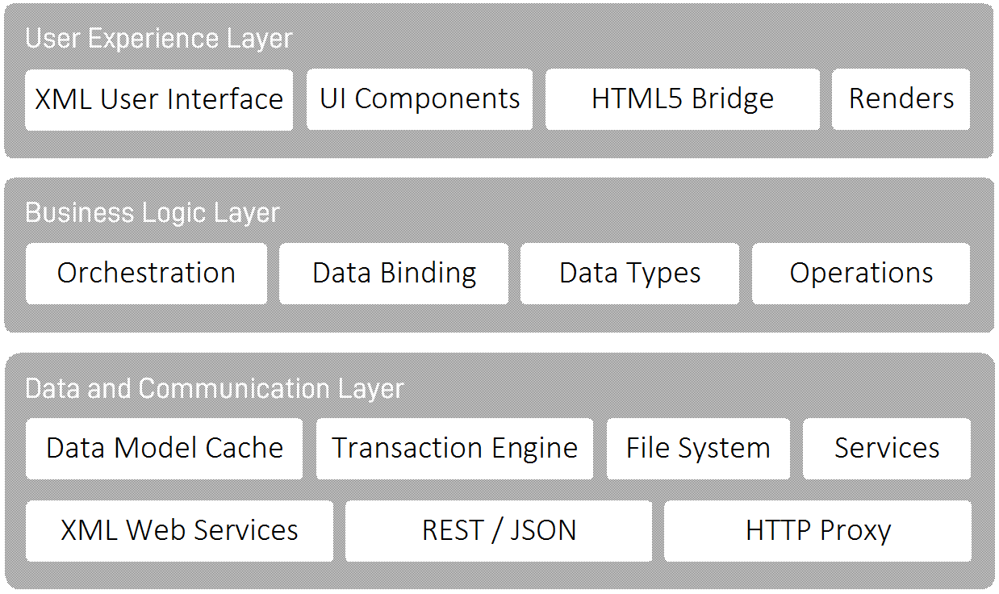

The following architecture overview shows the major components of the XML Device Edge Application Platform. Obviously, there are many more components to make it work, but the following are the core functionality.
At the user experience layer, the application manifest, the UI XML, but also XSLT renderers and JavaScript code that create the XHTML output are located. This layer can be extended using the component API by any developer.
Figure 8. Architecture of the XML Device Edge Application Platform
|  |
The business logic layer consists of modules to manage the XML process logic markup as well as the intelligent declarative data bindings, the data types for making the platform aware of any XML applications, and the API to extend the logic XML with arbitrary program logic operations.
Finally, the data and communications layer provides support for the XML-based data model. It allows channel services to be built that interface into any backend system, API, or database. It provides the container/object file system abstraction used to consume the data model and also includes ready-to-be-used communication channels for speaking with XML Web Services using SOAP, REST APIs, interfacing with JSON or any XHTML compliant website using the HTTP proxy.